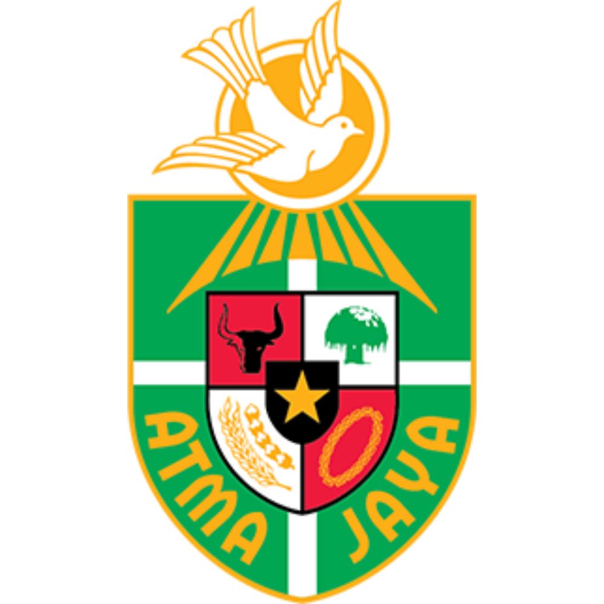

Hello, It's me
Gerent
Computer Science Student
About
Education
Universitas Ichsan Gorontalo
Bachelor Degree, Computer Science
- GPA: 3.91/4.00 (Current)
Aug 2022 - Mar 2026 (Expected)

Atma Jaya Catholic University of Indonesia
Information System
- GPA: 3.63/4.00
- Student Exchanges
Feb 2024 - Jul 2024 (Completed)
Bangkit Academy led By Google, GoTo, Tokopedia, Traveloka
Bootcamp
Bangkit is an approved Kampus Merdeka - Study Independent program fully supported by the Ministry of Education, Culture, Research, and Technology - Republic of Indonesia. This industry-led, interdisciplinary, and immersive program is designed to produce high-caliber technical talents for world-class Indonesian technology companies and startups, fully supported by Google, GoTo, Tokopedia, and Traveloka.
Sep 2024 - Jan 2025